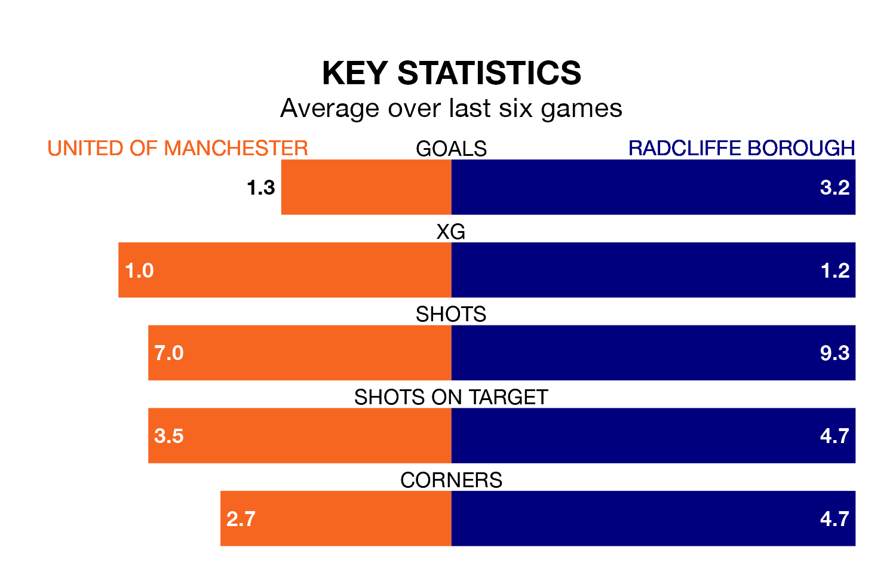

Radcliffe Borough travel to Broadhurst Park for Tuesday's late match against United of Manchester looking to bounce back from defeat last time out in Northern Premier League.
The Boro, who sit top of the league after 27 games, fell to a 4-3 home defeat to Guiseley on Saturday.
They face an United of Manchester side who picked up a win in their last match, a 2-0 victory against Gainsborough Trinity, and who sit 14th in the table.
With 78 goals in 27 games so far this season, Radcliffe are the league's highest scorers with 2.9 goals per game. And they are conceding fewer than average, letting in 40 goals at a rate of 1.5 per game.
United of Manchester, meanwhile, are below average scorers, with 1.5 goals per game, compared to a league average of 1.7. They have conceded 2.0 goals per game.
In the last 10 years, United of Manchester and Radcliffe have played each other on nine occasions. They won three each, and they drew three times.
On average, F.C. United scored 1.7 goals and the Boro 1.8 in those matches.
Their last meeting was on October 28, when they played out a 2-2 draw.
F.C. United are in mixed form in Northern Premier League, with three wins and three losses from their last six games.
With five wins and one loss over that period, Borough's form is much better – they have taken 15 points from 18, compared to the hosts' nine.
Updated: 14:59 (UTC), 05/02/24